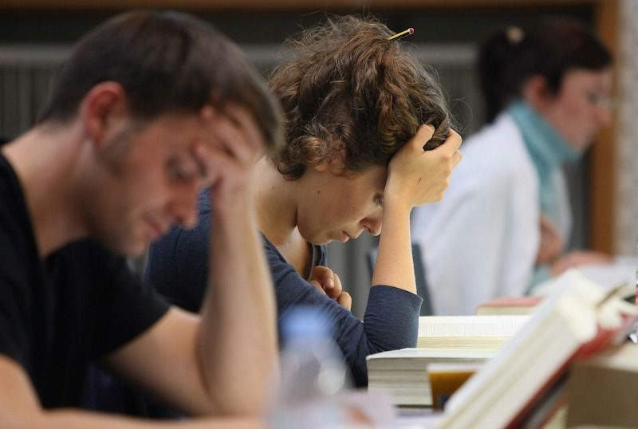

Вузы теряют деньги, а студенты — места. Условия приема на платное обучение изменились: разбираемся в последствиях

Проект новых правил приема в вузы в 2027 году закрепляет понятие «конкурс» для приема на платную основу. Проще говоря: теперь деньги не гарантия поступления, а риск вообще не поступить в университет есть еще и на платке. Прием последовательно ограничивали по всей стране. Как и зачем это делали и каким образом решение повлияло на цены на учебу и доходы вузов — «Фонтанка» разбиралась на примере университетов Санкт-Петербурга.
Ограничивать прием на платную основу начали в 2025 году — тогда вузам запретили «добавлять» дополнительные места по ходу приема. До введения ограничений система работала следующим образом: число бюджетных мест устанавливало государство через систему квот, число платных определял сам университет.Если по ходу приема спросоказывался выше предложения, то вуз мог добавить места уже в процессе, ориентируясь только на собственные подсчеты, сколько студентов он способен обучить. Даже в топовых вузах регулярно перевыполняли план по платному приему — и брали тех, кто набрал проходные для специальности баллы и был готов оплачивать учебу.
Подробнее